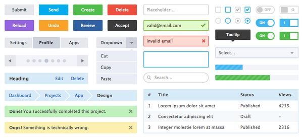

Making a design system from scratch
Building a design system is not just about creating UI components. It’s about creating a shared language between design and development teams, maintaining consistency, and improving workflow efficiency.
The process starts with understanding the product’s design principles, documenting styles and components, and setting up tools for maintenance. Figma and Storybook are great platforms for building scalable systems.
1. Foundation
Establish typography, colors, spacing, and core UI elements as tokens.
2. Components
Design reusable buttons, cards, inputs, and forms that follow your tokens.
3. Documentation
Write clear usage guidelines and version updates for your design system.
By the end, your team will have a unified visual language and faster workflow.